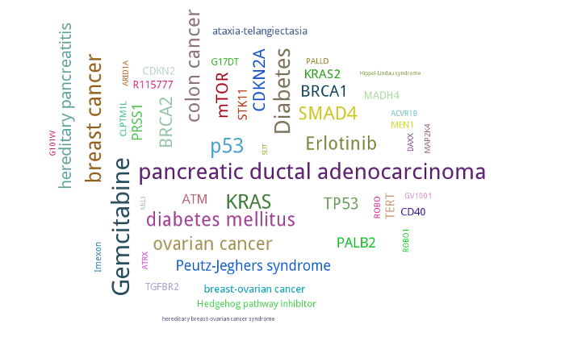
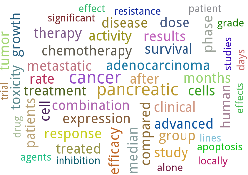
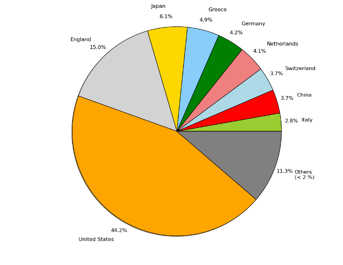
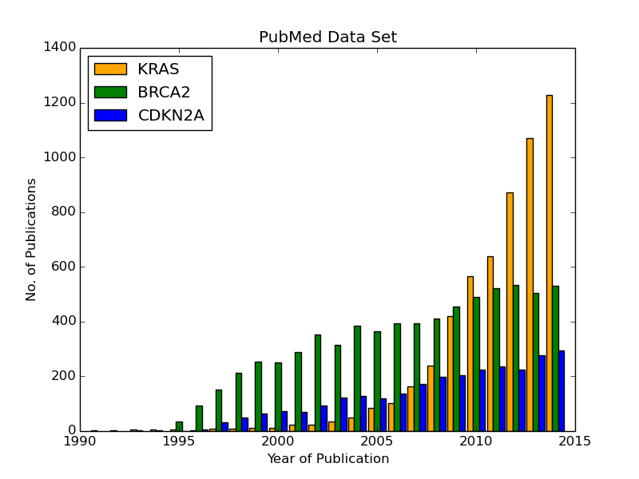
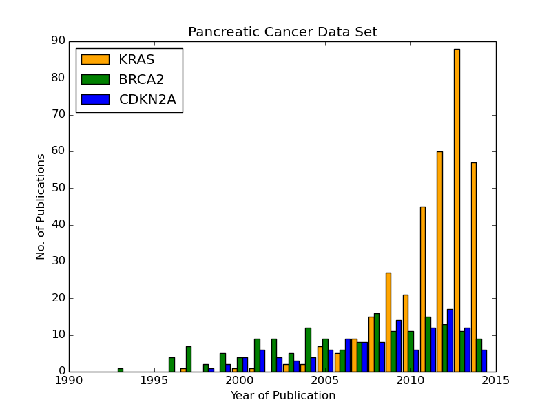
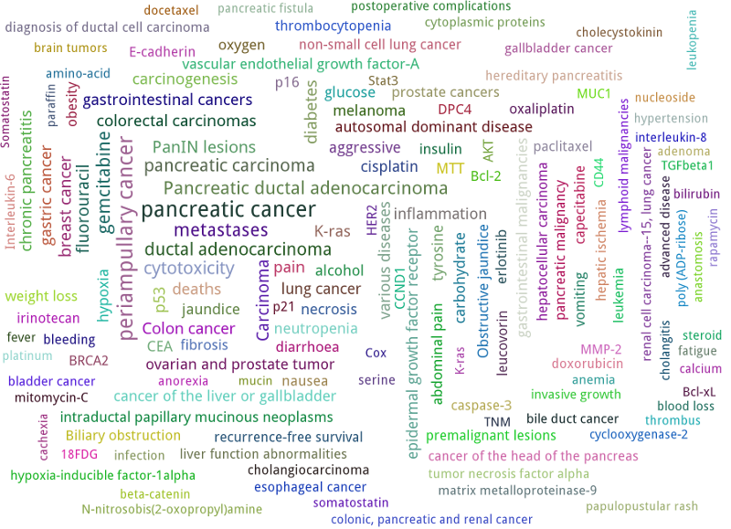
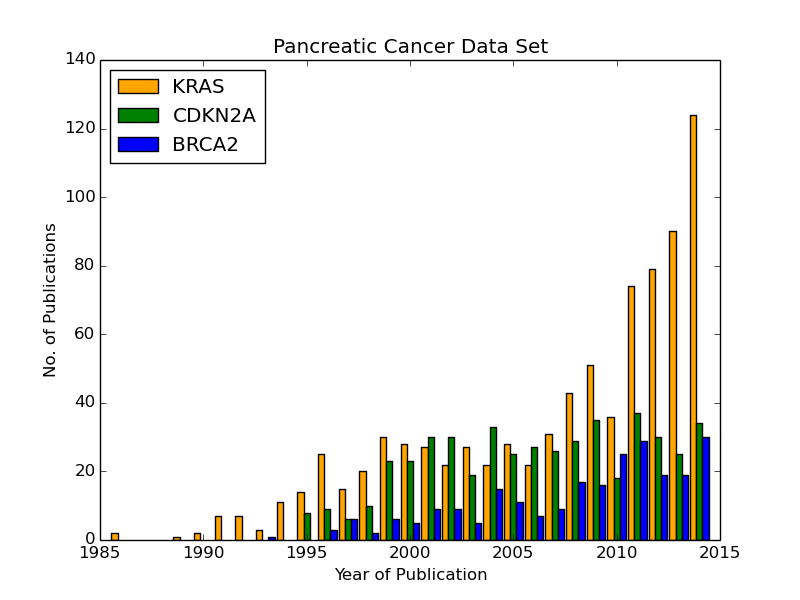
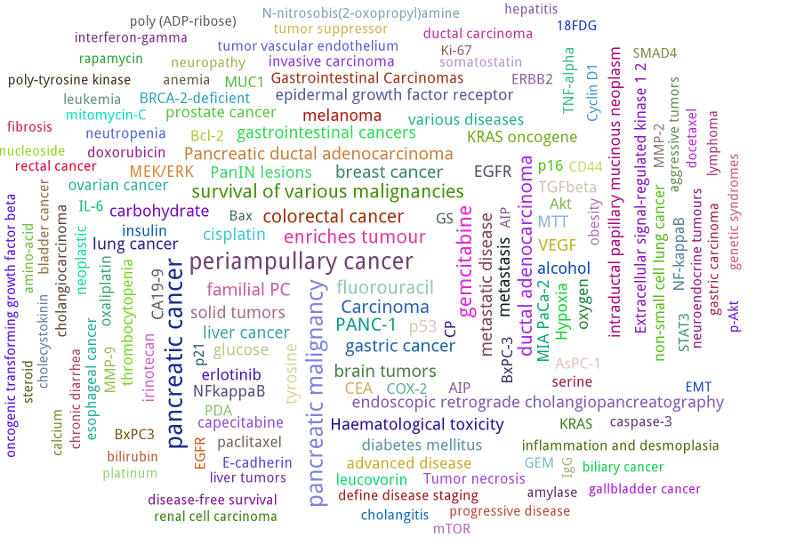
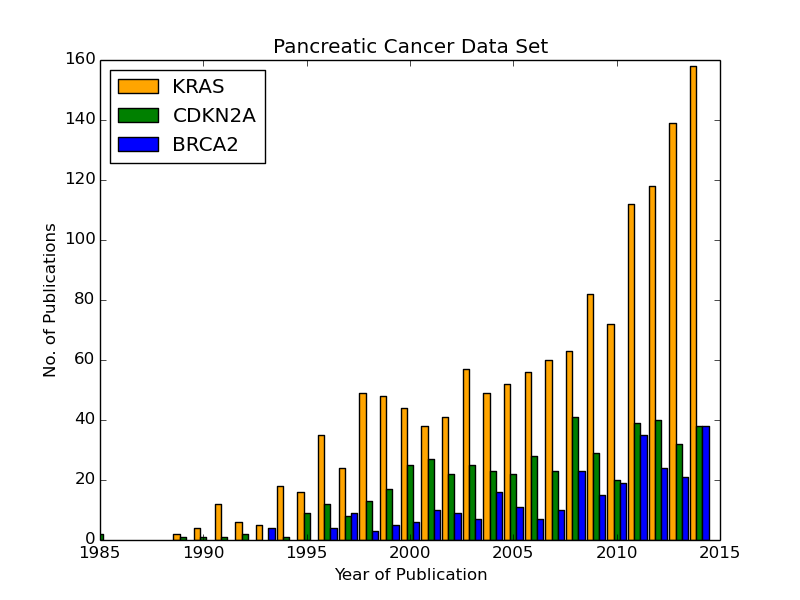

Type in the following URL into your browser and search for “pancreatic cancer”:
- http://www.ncbi.nlm.nih.gov/pubmed/
- The quote signs are important for the exact search.
- Click on “Send to:” and “File” and select “XML”.
16th April 2015: 23258 PubMed-IDs
- Some PubMed-IDs might change over time. Even for the given example list of PubMed-IDs for this documentation in “data/pubmed_result.txt” it is possible, that you receive another number of downloaded publications in your XML files as well as different outcomes in the ongoing analyes.
- The download of around 272 MB can take up to one hour depending on the time of day and internet connection.
Another possibility is to download PubMed articles with EFetch:
How to build a query:
You can also download only the PubMed-ID list from your browser by selecting “PMID List” instead of “XML” and then use EFetch (tested only on Ubuntu):
- Change into the directory “data” in your command-line and type in “python generate_efetch.py”. It will build the script “efetch.sh” which generates XML files with 100 PubMed-IDs in each document.
- The standard input filename is “pubmed_result.txt” and the block size of PubMed-IDs for one XML file is 100, but this can be changed. Type in “python generate_efetch.py -h” to show adjustable parameters.
- If you want to specify the name of the directory where the XML files should be saved, use parameter “-d” and create this folder manually before.
- The file “data/pubmed_result.txt” contains 23258 PubMed-IDs and the first 100 PubMed-IDs are saved in “data/pancreatic_cancer_example/medline_00000000.xml” as an example.
- Make “efetch.sh” executable with “chmod +x efetch.sh” in the command-line and run it in a folder of your choice by typing in “./efetch.sh”.
- This will be faster than using the browser to download a single XML file and it has the advantage of using multiprocessing in the next step as the script generates XML files with 100 titles in each document. The command also works with blocks of 500 PubMed-IDs, but not 1000.
It is also possible to download the whole PubMed via license:
These are the packages that need to be installed to use PubMed2Go:
- python>=2.7.3
- postgresql>=8.4
- python-xappy>=0.5
- python-xapian>=1.2.8
- python-sqlalchemy>=0.9.7
- python-psycopg2>=2.4.5 (dependency from SQLAlchemy)
To install, the following command can be used in the Ubuntu terminal:
- “sudo apt-get install”
If you use an older Ubuntu version, you can use “pip” to upgrade your package versions specifically for your user name, e.g.:
- “sudo pip install sqlalchemy –upgrade”
To install the Fedora packages use the following command. It will install all required packages:
- “sudo -E yum install python python-xappy python-sqlalchemy python-psycopg2 postgresql postgresql-server postgresql-contrib”
To enable PostgreSQL in Fedora, use the following steps:
- “sudo systemctl enable postgresql”
To start postgresql use the following command
- “sudo systemctl start postgresql”
To populate initial data, the following command is required:
- “journalctl -xn”
To initialise database, use the following command:
- “sudo postgresql-setup initdb”
To allow read access to postgres, SELinux should be modified. This can be done with the following command:
- “grep postgres /var/log/audit/audit.log | audit2allow -M mypol”
Then you can do this:
- “sudo semodule -i mypol.pp”
Append this line in the file “pg_hba.conf” (default location: “/var/lib/pgsql/data/pg_hba.conf”):
- “host all all 0.0.0.0 0.0.0.0 trust”
- If “trust” is used instead of “ident”, you are allowed to use a password. “0.0.0.0” means that all machines are allowed to login. That means, if you want to customise which server has to reach the database, you can control it here.
If there is not yet a superuser for the PostgreSQL database, create one with the name of your local account
- “sudo -u postgres createuser --superuser <user_name>”
“sudo -u <user_name> psql template1”
- \password <press enter, type in password, and press enter, again>
- \q
Now, you can connect to the standard PostgreSQL database “postgres” with PGAdmin3 or via command-line:
- “psql -h localhost -d postgres -U <user_name>”
Install Docker - it was tested on Ubuntu (64-bit required):
- https://docs.docker.com/installation/ubuntulinux/
There are many different operating systems supported:
Run Docker with the PubMed2Go image:
- Create a folder on your local disk with a name of your choice.
- Go into that folder and create a directory “import_data”.
- Copy you XML files downloaded from PubMed into the directory “import_data”.
Open a terminal and type in this command:
- “sudo docker run -d -v /home/<user_name>/<folder_of_your_choice>/:/export/ -p 9999:5432 bgruening/pubmed2go”
- This will create the PostgreSQL folder as well as the full text index database folder within the <folder_of_your_choice>.
- You can see that Docker is running by typing in “sudo docker ps”. This will show a randomly generated name for your process.
- Stopping Docker is possible by doing “sudo docker stop <name>”.
Docker maps your PosgreSQL port “5432” to the port “9999”. Now, you can connect to your database with PGAdmin via “localhost”, port “9999” and user “parser” with password “parser”. If you want to connect via command-line, use this command:
- “psql -h localhost -U parser -p 9999 -d pubmed”
If you have created another folder with a name <folder_of_your_choice> and the directory “import_data”, you can create another database on port “9998” and another full text index with different data there:
- “sudo docker run -d -v /home/<user_name>/<folder_of_your_choice>/:/export/ -p 9998:5432 bgruening/pubmed2go”
- In case of replacing or creating a database on a port that is already used, delete the complete directory <folder_of_your_choice> and repeat the configuration steps.
This also means that you need a default PostgreSQL installation on your operating system. Restart a closed Docker session on port “9999” with the command:
- “sudo docker run -d -v /home/<user_name>/<folder_of_your_choice>/:/export/ -p 9999:5432 bgruening/pubmed2go”
It is not recommended to run the PubMed2Go examples or to develop new scripts within the Docker container. If you want to modify the image, use the Docker documentation and this repository:
Open a Terminal and type in:
- “psql template1”
Enter the following commands into psql prompt to create a database, the schema “pubmed”, and a standard user “parser”. It is important to write the user “parser” in single quotes in the creation step:
- CREATE USER parser WITH PASSWORD 'parser';
- CREATE DATABASE pancreatic_cancer_db;
- GRANT ALL PRIVILEGES ON DATABASE pancreatic_cancer_db to parser;
- \q
Now you can create a schema “pubmed” as user “parser”. You will be asked to enter your password “parser” here:
- “psql -h localhost -d pancreatic_cancer_db -U parser -f create_schema.sql”
Create the tables in your database schema “pubmed” like this:
- Use the command “python PubMedDB.py -d pancreatic_cancer_db” in your terminal. There are no other parameters that can be set.
Load the data from PubMed into your PostgreSQL database:
You can check “python PubMedParser.py -h” to get a help screen with all adjustable parameters. If you want to use the defaults, you can simply type in “python PubMedParser.py”.
- By default, previously in PostgreSQL inserted data will be deleted before loading the new XML files into the database. That means you just have to call “python PubMedParser.py”, again in case you want to load new data into your already created database.
- If you do not want to delete, but only add XML files to the data that is already inside your PostgreSQL database, use parameter “-c”.
- The default database name is “pancreatic_cancer_db” and the default number of processors is 2. For changing, use parameters “-d” and “-p”.
- If you want to process only part of your files, use the parameters “-s” and “-e” with numbers referring to your alphabetically sorted files, e.g. “-s 0 -e 20” for the first 20 XML files in the directory.
It is important that you only type in the name of the folder containing all XML files with parameter “-i”, but not the name of the file(s). You do not need to type in the absolute path. Suppose, you have saved your XML file(s) in the directory “data/pancreatic_cancer”, use this command to run it with 3 processors and the database “pancreatic_cancer_db”:
- “python PubMedParser.py -i data/pancreatic_cancer/ -d pancreatic_cancer_db -p 3”
- If you receive an error concerning too many database connections, make sure that you use the latest version of SQLAlchemy. In earlier versions, sometimes the database connections were closed by the programme, but still remained open for some seconds, preventing the new programme to open a new connection. You can also increase the number of possible connections to your PostgreSQL server that can be opened (Ubuntu: “max_connections = <type in number>” in “/etc/postgresql/<version number>/main/postgresql.conf”).
- For one file with around 272 MB this takes around 10 min (only one processor can be used). For the same amount of data split into files with only 100 PubMed-IDs (use “generate_efetch.py”) it takes around 4 min with 3 processors (2,83 GHz and 8 GB RAM).
If you use all default values from this documentation, you will receive results in “results/results.csv” with “python RunXapian.py -x”.
- If you want to use the PostgreSQL database generated with Docker, change the port in the script “Article.py” in line 21 from “5432” to “9999” (the port you selected in Docker) and use the parameter “-d” with the database “pubmed” for the script “RunXapian.py”.
This command indexes all titles, abstracts, keywords, MeSH terms and substances from year 1809 to 2015, downloaded as XML files from PubMed (as described in section “Download a Data Set”).
- There are no abstracts with a publication date before 1809:
- http://www.nlm.nih.gov/bsd/licensee/2015_stats/baseline_med_filecount.html
After completing the step of generating the full text index, the programme searches it with the synonyms given in “synonyms/pancreatic_cancer.txt”.
- This file contains manually chosen names of drugs, genes, proteins, and diseases related to pancreatic cancer.
- User-provided synonyms can be directly stored in this file or saved in a new text document in the folder “synonyms”. Subsequently, the parameter “-s” can be used to process this file.
- The output in the command-line shows how many PubMed-IDs are indexed (23258) and how many synonyms are searched (86).
- This takes around 2-3 min on a 2,83 GHz machine with 8 GB RAM.
- You can also select single years for indexing and searching.
- If you just want to index your XML files, type in “python RunXapian.py -x -f”. (Parameter “-f” turns off the search function of the programme, default is “True”.)
- If you just want to search your synonyms, type in “python RunXapian.py” (Parameter “-x” turns on the indexing step, default is “False”.)
- The default location for your full text index database folder is “PubMed2Go/full_text_index/xapian/<xapian2015>”. You can change this location by using the parameter “-p”.
For the given example, 10392 lines were generated in “results.csv”. Run “python summary.py” to get two CSV files in directory “results”. If you have chosen another filename as output from “RunXapian.py”, you can do “python summary.py -f <name_of_input_file.csv>”:
Drug synonyms were taken from DrugBank using the exact search query “pancreatic cancer”:
Protein and gene synonyms have been extracted manually from OMIM also performing an exact search:
- Diseases related to pancreatic cancer have been taken the text given on OMIM, too.
“counts_results.csv” shows how many synonyms were found (descending - 64 lines, meaning 64 from a total of 86 search terms). The alternative input filename will be “counts_<input_file.csv>”.
- Taking into account the drugs, gemcitabine shows the most hits (2907). Erlotinib was found in 311 publications. Other approved drugs like WF10 and hydroxocobalamin were not found. Many investigational drugs were found 1-10 times: R115777, G17DT, hedgehog pathway inhibitor, imexon, GV1001, RP101, MGI-114, and PX-12. No other substances given on DrugBank were identified in this data set.
- Pancreatic ductal adenocarcinoma is the most common type of pancreatic cancer ( http://www.cancer.gov/aboutnci/budget_planning_leg/plan-2013/profiles/pancreatic ), which is shown by the 1598 hits. The tumor suppressor protein p53 was found 660 times, but also associated genes like KRAS, SMAD4, BRCA2, mTOR and CDKN2A were found (138-424 times). Many other genes were identified with a number below 10 hits and can be further analysed in “pmids_results.csv”.
- Associated diseases like breast cancer, colon cancer, ovarian cancer and diabetes were found 255-919 times.
- “pmids_results.csv” shows which synonyms co-occur in the same abstract or title, sorted by PubMed-IDs (7500 lines). In case of an alternative input filename, there will be the resulting file “pmids_<input_file.csv>”.
In case, you want to index the whole PubMed, it can be useful to index blocks of years or every year as a single directory. Like this, it is possible to use multiprocessing and decrease RAM usage. Just run the programme in different shells or on different machines and copy all resulting index folders to the same main directory. The tool “xapian-compact” summarises all generated directories to one full text index:
- http://xapian.org/docs/admin_notes.html#merging-databases
- xapian-compact -m <all input directories to be compressed, separated by space> <name of outcoming folder with complete database>
Use the following scripts to work with the functions OR, AND, NEAR, ADJ, NOT, and phrase search in Xapian and have a look at the HTML output files. As the number of PubMed-IDs increases continuously, the resulting numbers in this documentation can be seen as a reference point for the given query “pancreatic cancer”. Having a look at these scripts as well as “RunXapian.py” can be useful to build your own modified queries. There is also a small note in “full_text_index/xapian/readme.txt”.
“python search_title.py” shows that only a few lines of code are required to search only publication titles. This can be important as searching especially in publication titles puts more emphasis on the queried synonyms.
- While “RunXapian.py” searches only the exact phrase “pancreatic cancer”, “search_title.py” searches for the stem “pancreat” and also finds the word “pancreatitis”.
The search terms in the scripts described in this subsection are hard-coded and have to be changed manually by the user.
- It generates “Xapian_query_results.html” which shows the first 1000 of 18085 titles. Like this, many associated words are shown, e.g. “pancreatic ductal adenocarcinoma”, “pancreatic juice”, or “pancreatic diseases”.
To further specify your search, you can query titles containing “pancreatic cancer” and the drug “erlotinib” with “python search_near_title.py”.
- This generates 38 results in “Xapian_query_results_NEAR.html”.
- In this case “NEAR/5” is used as a Xapian function. In this case, a maximum of 4 words is allowed to be between the two search terms.
- An alternative would be the query with “ADJ/5”, which reduces the number of 38 hits to 4 hits, because with this function, the order of search terms is fixed.
- Here, the exact search is performed, again.
As it was done in “RunXapian.py” different index fields can be searched.
- “python search_title_or_text.py” searches documents in which the drug “R115777” occurs in the title or the text.
- As shown in “counts_results.csv”, only 10 hits can be found. The matching titles and abstracts can be seen in “Xapian_query_results_OR.html”.
The script “python search_not_title_or_text.py” specifies the query to documents not containing the terms “colon”, “lung”, or “ovarian”, but the word “pancreatic”.
- This reduces the number of results to 9 hits, as no publications are considered that contain these other types of cancer.
- The result is shown in “Xapian_query_results_NOT.html”.
- In this way, different search queries can be combined with a few lines of code.
Type in these SQL queries in PGAdmin3 or in the PostgreSQL shell to get familiar with the schema “pubmed”:
Find all substances related to pancreatic cancer, pancreatitis, etc.
- select * from pubmed.tbl_chemical where lower(name_of_substance) LIKE 'pancreati%'; -- 180 lines
Find all MeSH terms with the substring “ancreat” and prefixes as well as suffixes.
- select distinct on (descriptor_name) * from pubmed.tbl_mesh_heading where lower(descriptor_name) LIKE '%ancreat%'; -- 29 lines
What is the number of published titles in our database?
- select count(*) from pubmed.tbl_medline_citation; -- 23258
How many publications contain an abstract?
- select count(*) from pubmed.tbl_abstract; -- 21387
Show me all different journals and abbreviations referring to our topic.
- select distinct on (title, iso_abbreviation) title, iso_abbreviation from pubmed.tbl_journal; -- 2209 lines
What is the number of publications since 1990?
- select count(*) from pubmed.tbl_journal where pub_date_year <=2000 and pub_date_year >=1990; -- between 1990 and 2000: 3736 publications
- select count(*) from pubmed.tbl_journal where pub_date_year <=2010 and pub_date_year >2000; -- after 2000 until 2010: 9497 publications
- select count(*) from pubmed.tbl_journal where pub_date_year >2010; -- after 2010: 8461 publications
What is the number of publications in USA referring to our topic?
- select count(*) from pubmed.tbl_medline_journal_info where lower(country) = 'united states'; -- 10010 publications
Take one of the first publications for the query “pancreatic cancer” in the browser on NCBI and check whether this author has other publications, e.g. Bobustuc et al., 2015.
- select count (*) from pubmed.tbl_author where last_name = 'Bobustuc'; -- 2
Try “python find_authors.py” to see an example for processing a PostgreSQL query in Python. Use “python find_authors.py -f <output_filename> -d <name_of_database>” to specify the name of the output file and the database to connect to. “python find_authors.py -h” shows all adjustable parameters.
Considering the output file “results/authors.csv”, Ralph H. Hruban has published the most articles with a number of 258 PubMed-IDs.
- The other authors and their number of publications can be found in descending order.
You can check the amount of publications from similiarly written author names in PGAdmin3 and then Helmut Friess is shown as the one with the most publications:
- select distinct on(fk_pmid) * from pubmed.tbl_author where last_name = 'Friess' and (fore_name = 'H' or fore_name = 'Helmut') order by fk_pmid; -- 375
- select distinct on(fk_pmid) * from pubmed.tbl_author where last_name = 'Büchler' and (fore_name = 'Markus W' or fore_name = 'M W') order by fk_pmid; -- 310
- select distinct on(fk_pmid) * from pubmed.tbl_author where last_name = 'Hruban' and fore_name = 'Ralph H'; -- 258
- It is possible that an author name exists twice although different persons are meant. This is not considered here.
There are examples in which you can only find a collective name:
- select * from pubmed.tbl_author where last_name is NULL and fore_name is NULL; -- 273
Based on this, it is possible to consider whether the author Helmut Friess has published something containing the query terms from the list in “synonyms/pancreatic_cancer.txt”:
Type in “python find_topics.py”. You can try “python find_topics.py -h”, to see which parameters can be varied, e.g. if your input filename is not “pmids_results.csv” or if you want to specify your output filename, which default is “pmids_results_from_author.csv”.
- 127 publications were found for the given list of synonyms and this author.
- The main research topic seems to be pancreatic ductal adenocarcinoma. This result can be compared with the outputs using other author names (hard coded in “find_topics.py”) and running “find_topics.py” with another filename, again.
- The word clouds generated here are based on the modified Xapian full text version searching only PubMed titles and abstract texts. Therefore, the files “RunXapian.py” and “SynonymParser.py” as well as the folder “synonyms” need to be copied from the folder “full_text_index” to the folder “full_text_index_title_text”. The directories “xapian” and “results” have to be created, too. Afterwards, the command “python RunXapian.py -x” can be used, again. The numbers described in the last sections can differ slightly from the results generated here. The command “python summary.py” also has to executed.
- At first, the list of the 50 most frequently occurring words that were generated with “python summary.py” needs to be extracted in logarithmic scale to visualise the search terms appropriately. In the directory “PubMed2Go/plots/word_cloud”, run the script “get_search_terms_log.py” to get the output file “counts_search_terms_log.csv”. The highest frequency is shown by the small molecule gemcitabine. The parameter “-h” shows available parameters.
- The second step in this example is to find the 50 most frequently co-occurring words in texts that contain the search term gemcitabine. This can be done by running the command “python generate_surrounding_words_log.py”. The stop word list that is used by this script was referenced by Hettne et al. [A dictionary to identify small molecules and drugs in free text. Bioinformatics. 2009 Nov 15;25(22):2983-91. doi: 10.1093/bioinformatics/btp535.]. It is provided in the folder “blacklist”. Have a look at the links given in “stop_words.txt”. These stop words were used to filter out terms with a very high frequency that have no substantial meaning for the content analysed. The numbers in the ouput file “counts_surrounding_words_log.csv” are given in logarithmic scale, too.
- The search term “Gemcitabine” is hard-coded and needs to be changed directly in the script.
The plot can be genrated with the package “PyTagCloud”. Please, follow the installation instructions on this GitHub page:
- For the first plot given here, use the command “python create_word_cloud.py -i counts_search_terms_log.csv -o cloud_search_terms.png”.

For the next figure, run “python create_word_cloud.py -i counts_surrounding_words_log.csv -o cloud_surrounding_words.png”.

- The word clouds will look different every time the script is used.
- The figure area can be enlarged by changing the value of the parameter “size” in the function “create_tag_image()”.
In this subsection, the library “matplotlib” is needed to generate a pie chart.
- In Ubuntu, this library can be installed with the command “sudo apt-get install python-matplotlib”.
- In Fedora 22, the command “dnf install python-matplotlib” can be used and in case of older Fedora versions, the command “yum install python-matplotlib”.
- By running “python pie_chart_countries.py”, the picture “pie_chart_countries_publications.png” is produced from the input file “countries_pancreatic_cancer.csv”.
- To get the CSV file, you need to connect to your database, e.g. with “psql -h localhost -d pancreatic_cancer_db -U parser” and type in “\COPY (SELECT fk_pmid, LOWER(country) FROM pubmed.tbl_medline_journal_info WHERE country IS NOT NULL ORDER BY country ASC) TO 'countries_pancreatic_cancer.csv' DELIMITER ','”.
- The script calculates the percentages of country names in which the journals given in the PostgreSQL database are published. Fractions below 2 % are summarised to “Others”.
- The plot was inspired by an example given in the Matplotlib documentation (http://matplotlib.org/examples/pie_and_polar_charts/pie_demo_features.html).

- In this subsection, the library “matplotlib” is needed, too.
- Three timelines for the publications of the genes KRAS, BRCA2, and CDKN2A are shown in one bar chart.
- Running “create_bar_chart.py -p” generates the figure “KRAS_BRCA2_CDKN2A_pubmed.png”. The year 2015 cannot be considered as a complete year. Therefore, it is removed by this script before plotting.
- The CSV files processed by this script can be downloaded from PubMed by clicking on the bar chart appearing on http://www.ncbi.nlm.nih.gov/pubmed after entering the query (15th June 2015). The title lines in these CSV files were removed manually.
- All CSV files used in this subsection are written in comma-separated format.

Running “python get_years.py” generates the same kind of CSV files as provided by the browser search, but it uses the pancreatic cancer data set from this documentation by sending a query to the PubMed2Go PostgreSQL database.
- Running this script with default parameters selects the user-based Xapian folder “full_text_index_title_text”, but it can also be used with the results file in this documentation to reproduce the plot shown here:
- python get_years.py -x ../../full_text_index/results/results_from_documentation/ -p results.csv
- Based on this, “create_bar_chart.py” without the parameter “-p” generates the bar chart “KRAS_BRCA2_CDKN2A.png”.

- The slopes of the BRCA2 and CDKN2A timelines are rather low compared to KRAS, but start earlier in both plots. The timeline of the gene KRAS shows an exponential growth. One reason for this is its role in the regulation of cell proliferation [Small molecule inhibition of the KRAS-PDEδ interaction impairs oncogenic KRAS signalling. Zimmermann et al. Nature. 2013 May 30;497(7451):638-42. doi: 10.1038/nature12205. Epub 2013 May 22.].
- The review on OMIM mentioned in section 5 (http://omim.org/entry/260350?search=%22pancreatic%20cancer%22) provides more information with references showing why and how specific these genes are related to pancreatic cancer.
Follow the installation instructions on this GitHub page:
The file “pmid_list.txt” contains 21 PubMed-IDs that were taken from “PubMed2Go/data/pubmed_result.txt”. It is used as default by the script “write_BioC_XML.py”.
- The user can store his own list of PubMed-IDs in “pmid_list.txt” or create a new file. This user-provided list of PubMed-IDs can be loaded with the parameter “-i”.
- New PubMed-IDs can be selected from the PubMed2Go PostgreSQL tables, e.g. pubmed.tbl_abstract, pubmed.tbl_medline_citation, or pubmed.tbl_mesh_heading.
PubTator can be used as a webservice in several ways. There is a website highlighting entities like genes/proteins, chemical compounds, diseases, mutations, and species. This website can be used for text curation:
There is also a RESTful API:
How to use this API is shown by the following command executed via command-line:
curl -H “content-type:application/json” http://www.ncbi.nlm.nih.gov/CBBresearch/Lu/Demo/RESTful/tmTool.cgi/Disease/1000475,1006519,1010707/BioC/ > text_PubTator.xml
- All output files in this section refer to these three PubMed-IDs. The maximum number of PubMed-IDs to send to PubTator in this case was 21. This is the reason why “pmid_list.txt” contains exactly 21 PubMed-IDs.
The script “call_PubTator.py” wraps this command with the Python module “subprocess” and downloads PubMed BioC XML annotated abstracts from PubTator.
- It contains the parameter “-t” (trigger) that selects the type of entity to be tagged (default: Disease) for a list of PubMed-IDs (default: pmid_list.txt).
- All parameters of this script can be shown with “python call_PubTator.py -h”.
The default output file “text_PubTator.xml” also shows the MeSH IDs for the extracted diseases, e.g. “pancreatic carcinoma”, the first one in the example file:
- PubTator returns two types of infon elements. Therefore, the line “<!ELEMENT annotation ( infon*, location*, text ) >” had to be changed to “<!ELEMENT annotation ( infon*, location*, text, infon* ) >”.
If you want to add MeSH term annotations from the PostgreSQL to the file “text_PubTator.xml”, you can run the command “python add_BioC_annotation.py -i text_PubTator.xml -o annotated_text_PubTator.xml”.
- MeSH terms refer to several types of entities. In this case, some of the MeSH terms will show duplicate disease annotation elements.
All these entities can also be tagged in BioC XML format from plain text input via the single software packages referenced here below “Quick Links”:
They are described in the following PDF file as well as other software packages in chapter “TRACK 1 (BioC: Interoperability)”:
- http://www.biocreative.org/media/store/files/2013/ProceedingsBioCreativeIV_vol1_.pdf
- There are also other webservices included as well as BioC natural language preprocessing pipelines in C++ and Java (http://bioc.sourceforge.net).
PubTator can be used to completly extract genes, diseases, and chemicals from the pancreatic cancer data set. In the case of diseases and chemicals, there are not always identifiers provided for the recognised synonyms. The following commands lead to a new word cloud based on the 150 most frequently occurring entities:
- Gene and protein NER: python call_PubTator.py -i pubmed_result_complete.txt -o gene_complete.csv -t Gene -f PubTator
- Disease NER: python call_PubTator.py -i pubmed_result_complete.txt -o disease_complete.csv -t Disease -f PubTator
- Chemical NER: python call_PubTator.py -i pubmed_result_complete.txt -o chemical_complete.csv -t Chemical -f PubTator
- File concatenation: cat gene_complete.csv disease_complete.csv chemical_complete.csv > entities_complete.csv
- Get PubMed IDs, synonyms, and identifieres: python results_PubTator_format.py -i entities_complete.csv -o entities_formatted_identifiers.csv
- Count entities, summarised by their identifiers: python unify.py -i entities_formatted_identifiers.csv -o entities_formatted_identifiers_unified.csv
- Generate logarithmic values (first 150 entities): python get_search_terms_log.py -x ../../BioC_export/results_from_documentation -i entities_formatted_identifiers_unified.csv -o counts_entities_identifiers_log.csv
- Create word cloud: python create_word_cloud.py -i counts_entities_identifiers_log.csv -o cloud_entities_identifiers.png

- This example is based on selecting one synonym per identifier. The script “results_PubTator_format.py” can be used with the parameter “-s” to extend the selection to all synonyms without using the identifiers. In this case, the step of using the script “unify.py” needs to be replaced with the script “summary.py” in the Xapian folder “full_text_index”.
The bar chart shown with manually selected search terms can also be produced with the automatically identified entities from PubTator introduced in this section:
- python get_years.py -x ../../BioC_export/results_from_documentation/ -p entities_formatted_identifiers.csv -t Entrez_GeneID/search_terms_KRAS.txt -o KRAS
- python get_years.py -x ../../BioC_export/results_from_documentation/ -p entities_formatted_identifiers.csv -t Entrez_GeneID/search_terms_BRCA2.txt -o BRCA2
- python get_years.py -x ../../BioC_export/results_from_documentation/ -p entities_formatted_identifiers.csv -t Entrez_GeneID/search_terms_CDKN2A.txt -o CDKN2A
- python merge.py
- python create_bar_chart.py

- Based on the search for a larger vocabulary from PubTator using Entrez GeneID numbers, CDKN2A shows more hits than BRCA2 and the identified numbers of abstracts are generally higher.
The same steps as performed with PubTator can be performed with other tools, too.
The disease annotation step can be replaced by the stand-alone application DNorm from the tmBioC package (http://www.ncbi.nlm.nih.gov/CBBresearch/Lu/Demo/tmTools/ - link to DNorm):
- Write BioC document from pancreatic cancer data set (BioC directory): “python write_BioC_XML.py -i pubmed_result.txt -o pancreatic_cancer_BioC.xml”
- Add DNorm annotatons (in download directory): ./RunDNorm_BioC.sh config/banner_NCBIDisease_TEST.xml data/CTD_diseases.tsv output/simmatrix_NCBIDisease_e4.bin pancreatic_cancer_BioC.xml pancreatic_cancer_BioC_DNorm.xml
- This command can be used to create the “file pancreatic_cancer_BioC_DNorm.xml” (not uploaded).
- The script “read_BioC_annotations.py” shows the basic commands how to iterate over MeSH term annotations in BioC format from the example mentioned earlier, using PubMed2Go and PubTator.
- The script “BioC_to_CSV.py” is based on the code in “read_BioC_annotations.py” and extracts the DNorm annotations in “file pancreatic_cancer_BioC_DNorm.xml” to a CSV file “DNorm_formatted.csv (not uploaded). The script needs the DNorm DTD file (in the DNorm download directory). Copy it to you execution folder and rename it to”BioC_DNorm.dtd". If this file causes an error in the PyBioC API, replace the raise command in bioc/bioc_reader.py by a print command.
- Genes and proteins can be annotated with GeneTUKit, a software for gene normalisation which was ranked among the best-performing tools in the BioCreative III challenge in 2010.
- Unfortunately, the source code is not available, but there is a GitHub repository wrapping PubMed2Go articles into a pseudo XML format used by the software (https://github.com/ElhamAbbasian/GeneTUKit-Pipeline).
- Using the list of PubMed IDs from the PubMed2Go documentation and following the first three steps in the GeneTUKit pipeline generates a file pmid_geneid_syn.csv.
- For the output format used to generate the word cloud, the orginal line to write the output in the script filter_out_genetukit_output.py can be changed to ‘outfile.write(pmid + “t” + temp[1].split(“|”)[0] + “t” + temp[0] + “n”)’. Multiple synonyms with the same Entrez Gene-ID number are separeted with a pipe (“|”) and only the first synonym is needed for the task here. Furthermore, the order from the file name “PubMed-ID-GeneID-Synonym” is changed to “PubMed-ID-Synonym-GeneID” by exchanging the elements temp[0] and temp[1].
After file concatenation (single files not uploaded: cat GeneTUKit_formatted.csv DNorm_formatted.csv chemical_formatted.csv > entities_complete_3tools.csv), the steps to generate the word cloud can be executed as already described in the PubTator example.
- python unify.py -i entities_complete_3tools.csv -o entities_complete_3tools_unified.csv
- get_search_terms_log.py -x ../../BioC_export/results_from_documentation -i entities_complete_3tools_unified.csv -o counts_entities_identifiers_log_3tools.csv
- create_word_cloud.py -i counts_entities_identifiers_log_3tools.csv -o cloud_3tools.png

The same is possible for the bar chart example.
- The Entrez GeneID numbers were extracted from the file GeneTUKit_formatted.csv with the script get_search_term_identifiers.py (KRAS gene example hard-coded).
- This has to be done with the other two genes CDKN2A and BRCA2, too. The steps “python merge.py” and “python create_bar_chart.py” lead to the new bar chart “KRAS_CDKN2A_BRCA2.png”, manually renamed to “KRAS_CDKN2A_BRCA2_3tools.png” to be distinguishable from the PubTator example.

- This approach leads to a higher number of publications for each gene, but shows basically the same tendencies as in the PubTator example.
- The example of using PubTator, DNorm, and GeneTUKit illustrates, that the infrastructure of PubMed2Go can be easily extended to combine different data formats (PubTator, BioC, and pseudo XML format), being independent from a Web service, but making use of it, if desired.
Please, write an e-mail, if you have questions, feedback, improvements, or new ideas:
If you are interested in related projects, visit our working group’s homepage: